Onde tudo começou
Viajar sempre fez parte da minha vida, mas ganhou um significado ainda maior depois que fiquei longe da minha família.
Para mim, viajar não é apenas conhecer lugares novos: é reencontrar pessoas importantes e aproveitar momentos com elas.
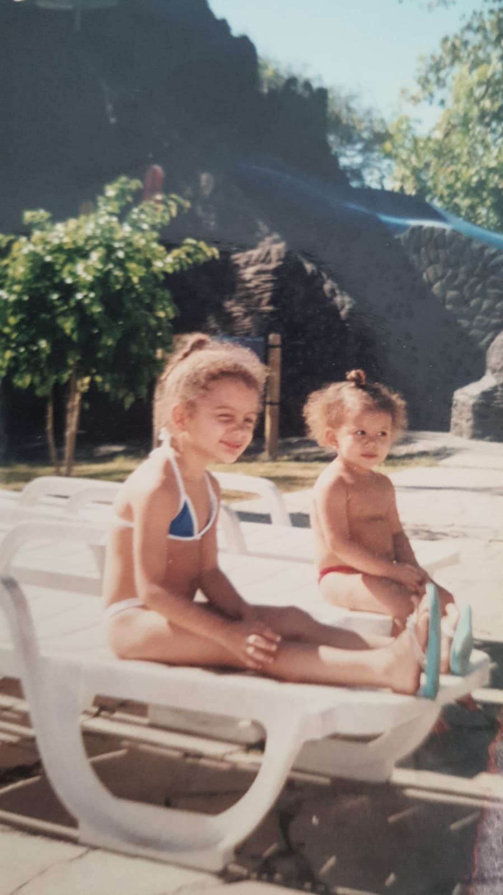
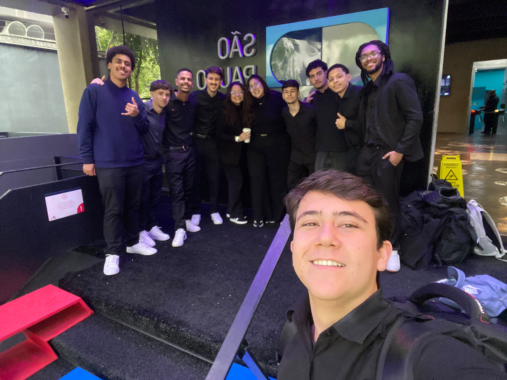
Novos caminhos
Minha mudança para São Paulo marcou o início de uma nova fase. Depois de estudar Administração, decidi começar uma nova trajetória na área de Tecnologia.
Ingressar na SPTech significou sair da minha zona de conforto e enfrentar o desafio de aprender uma área completamente nova.
Da ideia ao Triply
O Triply nasceu da união entre meu interesse por viagens, minha necessidade de organização e a vontade de aplicar os conhecimentos que estou adquirindo na faculdade.
Para mim, viajar significa muito mais do que conhecer novos lugares. É a possibilidade de viver experiências que sempre imaginei, criar memórias e, principalmente, reencontrar as pessoas que amo. Como também gosto de planejar e organizar as coisas, quis desenvolver uma plataforma que ajudasse a transformar sonhos em planos reais. O Triply reúne um pouco do que valorizo: o amor pelas pessoas importantes na minha vida, a vontade de descobrir o mundo e a liberdade de viver novas experiências.
❤️ Amor | ✨ Realização de sonhos | 🌎 Liberdade
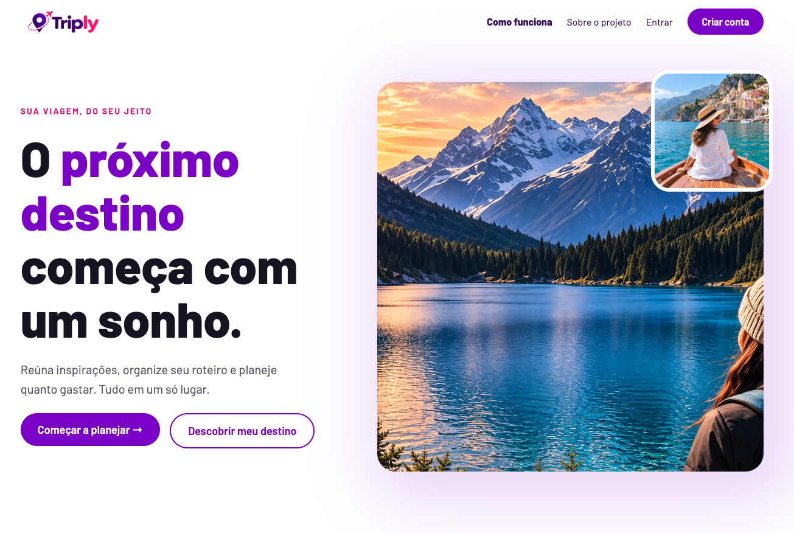
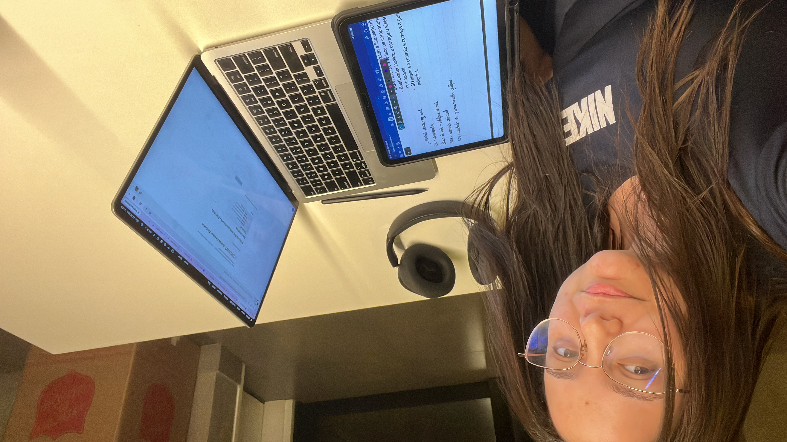
Nem tudo foi fácil
Começar a estudar uma área completamente nova foi um dos meus maiores desafios. No início, tive dificuldade para acompanhar tantos conteúdos que ainda não conhecia.
Além disso, desenvolver uma aplicação praticamente do zero, mesmo tendo começado a estudar programação há poucos meses, exigiu bastante dedicação e aprendizado.
O que conquistei pelo caminho
Ao longo do desenvolvimento do Triply, comecei a perceber o quanto evoluí desde o início do semestre. Funcionalidades que antes pareciam difíceis foram se tornando possíveis conforme eu pesquisava, praticava e corrigia meus erros.
Uma das minhas maiores conquistas foi entender que não preciso saber tudo antes de começar. Aprendi que enfrentar dificuldades também faz parte do processo de aprendizagem.
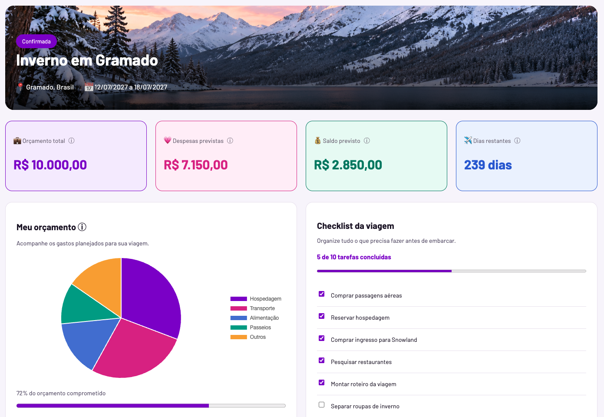
QUEM CAMINHOU COMIGO
Gratidão
Sou grata às pessoas que estiveram ao meu lado durante essa jornada, me apoiando, incentivando e acreditando em mim.
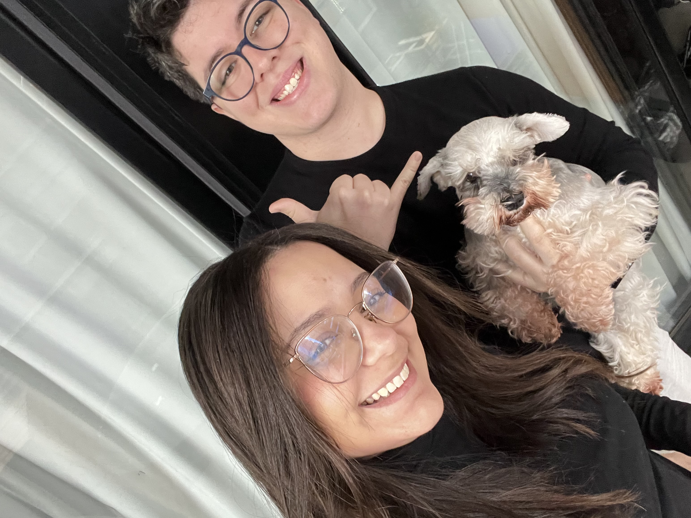
Meu parceiro ❤️
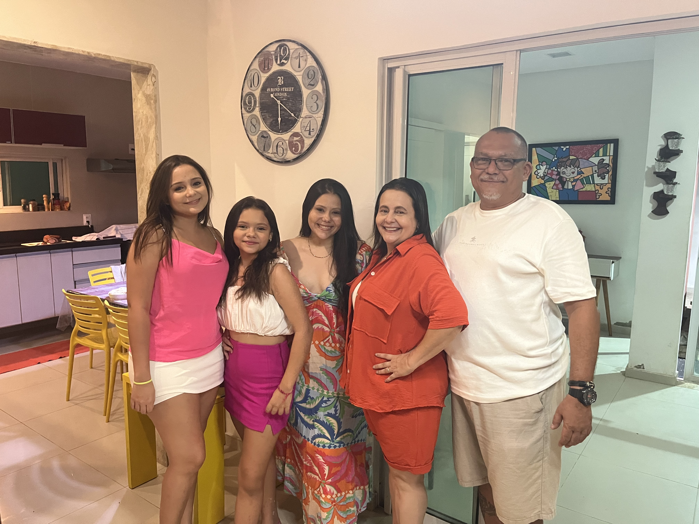
Minha família 💗
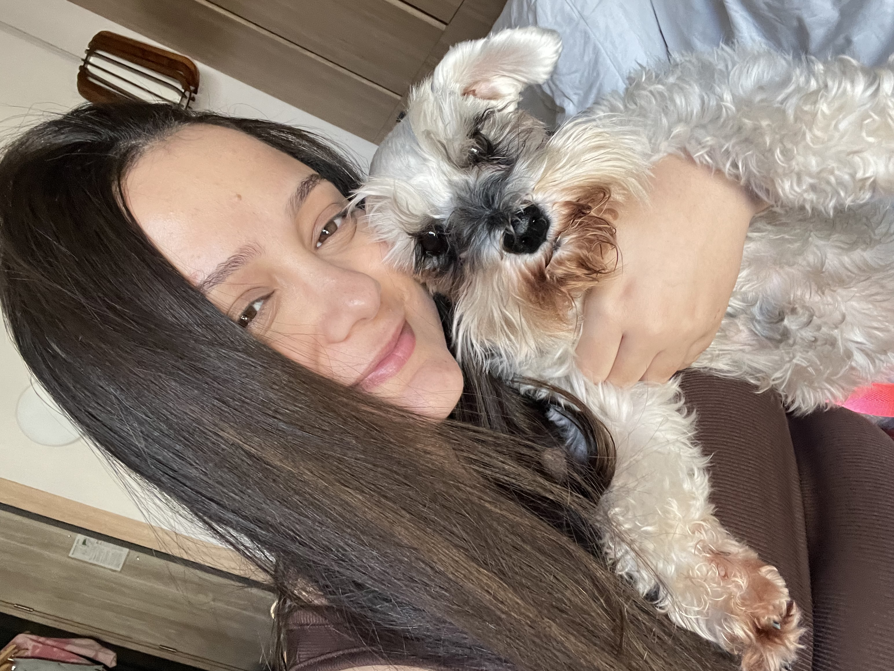
Cacau 🐾
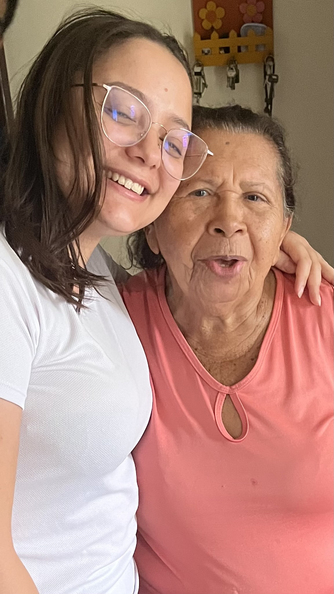
Momentos especiais
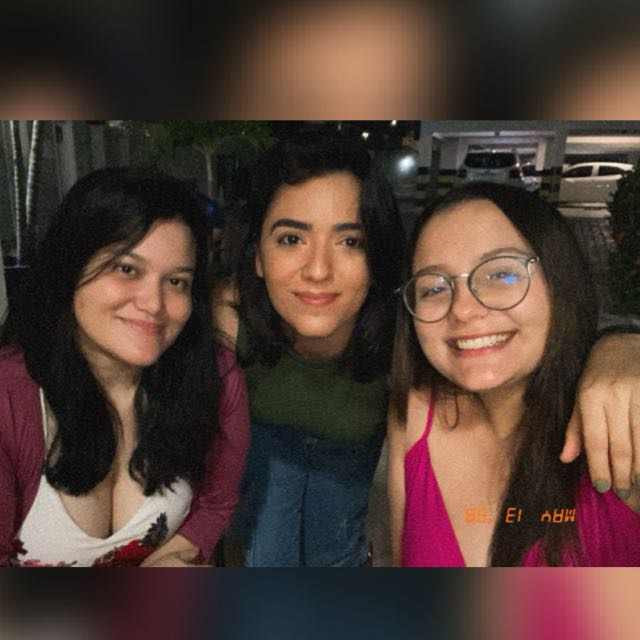
Quem esteve comigo
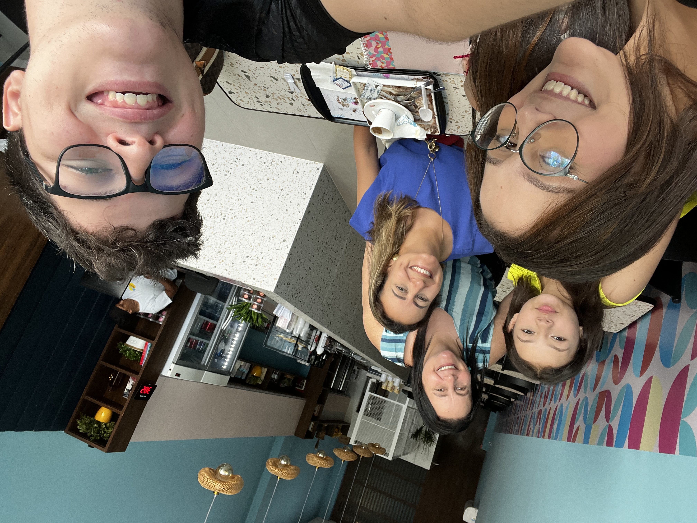
Reencontros
O PRÓXIMO CAPÍTULO
Para onde vou agora?
Minha jornada na tecnologia está apenas começando. Quero continuar aprendendo, enfrentando novos desafios e desenvolvendo minhas habilidades a cada etapa.
O Triply representa uma das minhas primeiras conquistas nessa nova trajetória, mas também me lembra de que ainda tenho muito a descobrir e construir.